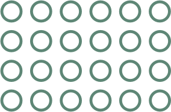

Lebanon's Most Prolific Blog (2014 edition)
This award is straightforward: Which blog has published the most posts in 2015? Our winner, No Garlic No Onions, has published more than 840 blog posts in 2015*, averaging 16.08 posts per week, making him Lebanon's Most Prolific Blog of 2015
Below is a list of the runners up who are dedicated to updating their blogs regularly
| # | Blog | Average posts per week |
|---|---|---|
| 1 | No Garlic No Onions | 16.08 |
| 2 | Blog Baladi | 14.29 |
| 3 | Harf Noon | 8.27 |
| 4 | Beyond Beirut | 6.73 |
| 5 | Nad's Reviews | 5.54 |
| 6 | The Mideastwire Blog | 5.54 |
| 7 | Hussain Abdul Hussain's blog | 4.85 |
| 8 | Popcorn 961 | 4.44 |
| 9 | My Beirut Chronicles | 4.40 |
| 10 | Tarek Chemaly | 4.21 |
*We counted all the posts that were posted between January 1st 2015 and December 15 2015.